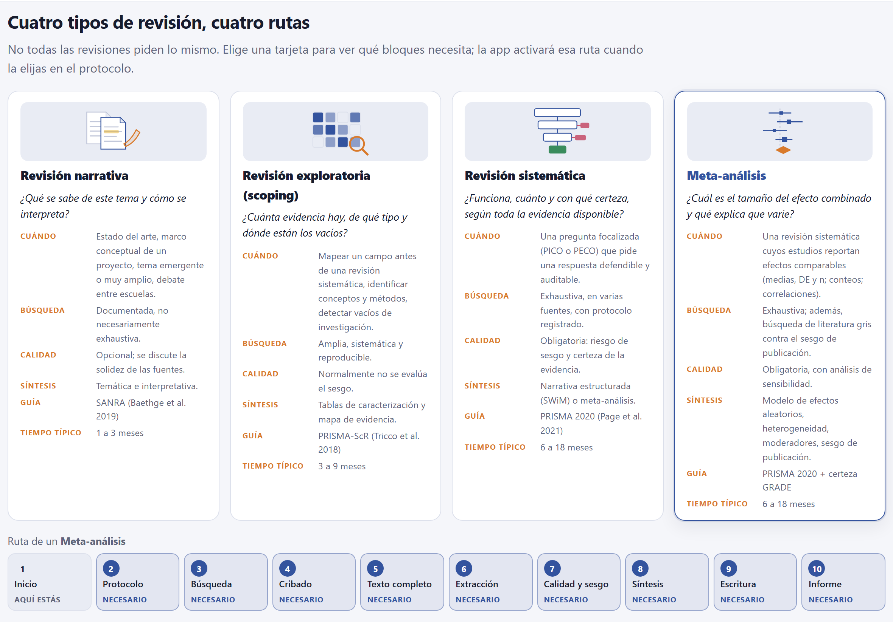
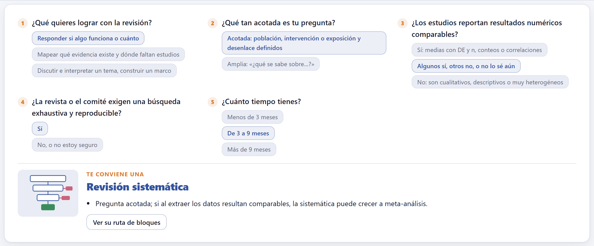
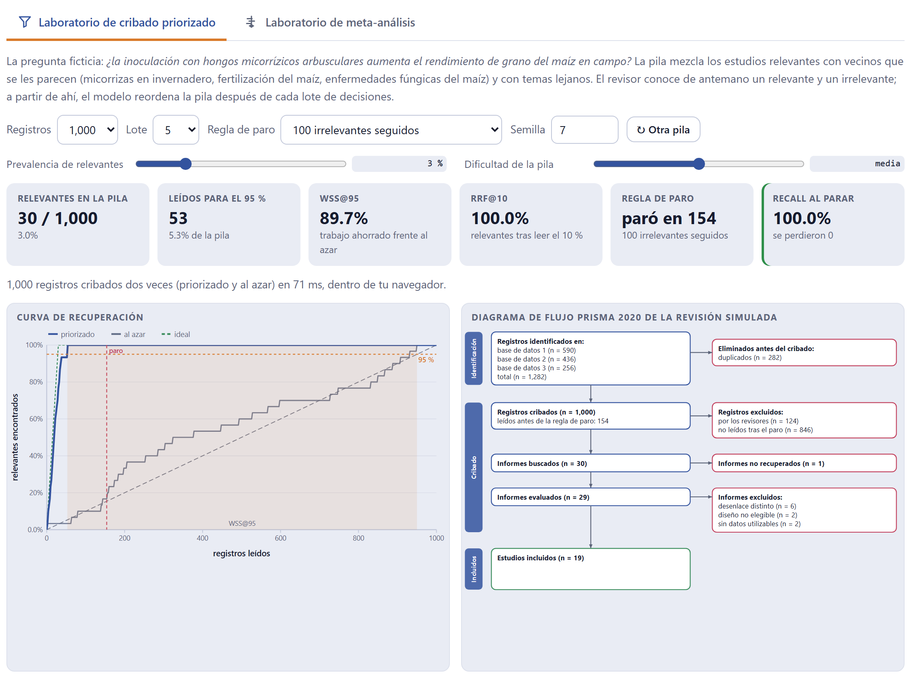
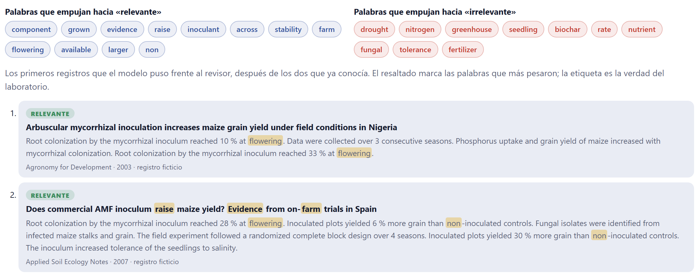
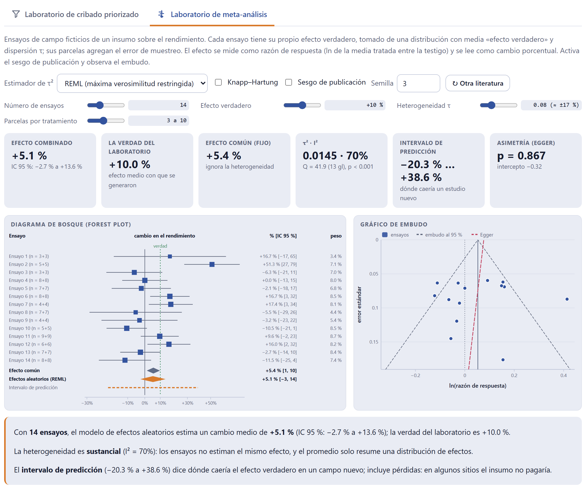

La portada no es un adorno: ayuda a elegir el tipo de revisión, muestra qué bloques pide cada uno y trae dos laboratorios que usan los mismos motores que los Bloques 4 y 8 sobre literaturas ficticias cuya verdad conocen. Sirven para entender, antes de arriesgar tu propia revisión, qué ahorra el cribado priorizado y qué cuesta parar, y qué tan lejos puede quedar un meta-análisis de la verdad.
La app abre siempre en la portada (figura I.1 de la introducción). Debajo del título hay cinco botones que llevan a donde casi siempre se quiere ir primero.
| Botón | A dónde lleva |
|---|---|
| Empezar mi revisión → | Al Bloque 2, al protocolo que esté abierto (o a uno nuevo del tipo elegido en la portada). |
| ¿Qué tipo de revisión me conviene? | A las tarjetas de los cuatro tipos y al asistente de cinco preguntas (secciones 1.2 y 1.3). |
| Probar los laboratorios | A los dos laboratorios (secciones 1.4 y 1.5). |
| Abrir el ejemplo completo | Carga el proyecto de ejemplo del manual y va al Bloque 2 (sección I.7). |
| Cómo citar | A la cita del programa (sección 1.7). |
Las cuatro etiquetas de abajo resumen los compromisos del programa: funciona completo en el navegador, los registros no salen de la computadora, está en español e inglés y sigue PRISMA 2020 y PRISMA-ScR. La quinta dice que el motor de meta-análisis se verificó con ejemplos publicados: el conjunto de datos de la vacuna BCG (Colditz et al. 1994) reproduce τ² = 0.3132 y μ̂ = −0.7145 con REML, las cifras de referencia de la literatura.

Cada tarjeta resume el tipo en siete renglones: su pregunta típica, cuándo conviene, cómo es la búsqueda, qué pasa con la calidad de los estudios, cómo se sintetiza, qué guía de reporte sigue y cuánto tiempo suele tomar. Al elegir una tarjeta, la franja de abajo muestra su ruta: cada bloque marcado como necesario, opcional o no aplica.
La tarjeta elegida en la portada es solo una preferencia: se usa como tipo de un protocolo nuevo. El tipo que manda es el que se fija en el Bloque 2›1 · Tipo de revisión, y de él dependen el marco de la pregunta, el esqueleto del manuscrito, la lista de verificación del Bloque 9 y el estado del proyecto del Bloque 10. Todos los bloques siguen abiertos en cualquier tipo: una narrativa puede usar el cribado del Bloque 4 si le conviene.
Las cinco preguntas son: qué quieres lograr, qué tan acotada es la pregunta, si los estudios reportan resultados numéricos comparables, si la revista o el comité exigen una búsqueda exhaustiva y reproducible, y cuánto tiempo tienes. Con las cinco respondidas, el asistente propone un tipo y lista sus razones, para que puedas estar en desacuerdo con conocimiento de causa. El botón Ver su ruta de bloques elige esa tarjeta y baja a su ruta.
| Si quieres mapear qué evidencia existe | entonces exploratoria: mapear no es estimar un efecto. |
| Si quieres discutir e interpretar un tema | entonces narrativa; exploratoria si además te exigen una búsqueda reproducible. |
| Si quieres responder si algo funciona, pero la pregunta es amplia | entonces exploratoria primero: una pregunta amplia no se responde con un número. |
| Si la pregunta es acotada y los efectos son comparables | entonces meta-análisis. |
| Si la pregunta es acotada y no sabes aún si los datos serán comparables, o no lo son | entonces sistemática, que puede crecer a meta-análisis al extraer, o quedarse en síntesis narrativa estructurada. |
| Si tienes menos de tres meses para una sistemática | entonces el asistente lo advierte: acota la pregunta o las fuentes y decláralo como limitación. |

El laboratorio escribe una pila de registros ficticios sobre una pregunta —¿la inoculación con micorrizas aumenta el rendimiento del maíz en campo?— y sabe cuáles son relevantes. Mezcla los relevantes con vecinos que se les parecen (micorrizas en invernadero, fertilización del maíz, enfermedades fúngicas) y con temas lejanos. El revisor simulado conoce de antemano un relevante y un irrelevante; a partir de ahí, el mismo modelo que usa el Bloque 4 reordena la pila después de cada lote de decisiones, y el laboratorio criba la misma pila también en orden aleatorio para comparar.

| Control | Qué cambia |
|---|---|
| Registros | El tamaño de la pila: 500, 1,000 o 2,000. |
| Lote | Cuántas decisiones se toman antes de que el modelo reordene (1, 5, 10 o 25). Lotes chicos aprenden más rápido. |
| Regla de paro | 50, 100 o 200 irrelevantes seguidos; la rodilla de la curva con ρ ≥ 6; o la rodilla ajustada, con ρ ≥ 156 − relevantes encontrados (Cormack y Grossman 2016). |
| Prevalencia de relevantes | Qué fracción de la pila es relevante (3 % al inicio). Las revisiones reales suelen andar entre 1 y 5 %. |
| Dificultad de la pila | Cuánto se parecen los vecinos a los relevantes: fácil, media o difícil. |
| Semilla · ↻ Otra pila | La misma semilla da la misma pila; el botón sortea otra. |
| Leídos para el 95 % | Cuántos registros hubo que leer, en el orden priorizado, para encontrar el 95 % de los relevantes. |
| WSS@95 | El trabajo ahorrado: la fracción de la pila que no se lee para llegar al 95 % de los relevantes, menos el 5 % que ahorraría el azar (Cohen et al. 2006). |
| RRF@10 | La fracción de los relevantes que ya se encontró tras leer el primer 10 % de la pila. |
| Regla de paro y Recall al parar | Dónde habría parado la regla elegida y qué fracción de los relevantes se había encontrado ahí. El recuadro se pone en rojo si se perdieron relevantes. |

De 1,000 registros, 30 son relevantes (3.0 %). En orden priorizado bastan 53 lecturas para encontrar el 95 % de ellos (el 5.3 % de la pila): WSS@95 = 89.7 %. Tras leer el 10 % de la pila ya se tenían todos (RRF@10 = 100 %). La regla de 100 irrelevantes seguidos paró en el registro 154 sin perder ninguno. Sube la dificultad o baja la prevalencia y repite: verás que la regla que era segura con esta pila empieza a dejar relevantes atrás.
El modelo es un clasificador bayesiano ingenuo sobre palabras ponderadas por TF-IDF (Salton y Buckley 1988; Rennie et al. 2003), que se reentrena con cada lote: aprendizaje activo en la línea de los trabajos de Yu et al. (2018) y van de Schoot et al. (2021). No excluye nada; solo cambia el orden en que ves los registros. Como los relevantes aparecen pronto, llega un momento en que solo salen irrelevantes, y ahí entra una regla de paro que se declara en el protocolo. El costo es explícito: parar antes de terminar puede dejar fuera algún relevante. Por eso el laboratorio muestra el recall al parar, y por eso el Bloque 4 recomienda verificar con una muestra al azar de lo no leído.
El segundo laboratorio genera ensayos de campo ficticios de un insumo sobre el rendimiento. Cada ensayo tiene su propio efecto verdadero, tomado de una distribución con media Efecto verdadero y dispersión Heterogeneidad τ; sus parcelas agregan el error de muestreo. El efecto se mide como razón de respuesta (el logaritmo de la media tratada entre la testigo) y se lee como cambio porcentual. Luego los combina con el mismo motor del Bloque 8 y te enseña la distancia entre la verdad y la estimación.

| Control | Qué cambia |
|---|---|
| Estimador de τ² | REML (máxima verosimilitud restringida), DerSimonian–Laird, Paule–Mandel, Hedges o ML: cómo se estima la varianza entre ensayos. |
| Knapp–Hartung | Intervalos con la distribución t y un ajuste de la varianza; más honestos con pocos estudios. |
| Sesgo de publicación | Oculta los ensayos pequeños que «no salieron»: el embudo pierde una esquina y el promedio se infla. |
| Número de ensayos, Efecto verdadero, Heterogeneidad τ, Parcelas por tratamiento | La literatura que se genera. Junto a τ se muestra su equivalente en cambio porcentual (0.08 ≈ ±17 %). |
Los seis indicadores son el efecto combinado con su IC 95 %, la verdad del laboratorio, el efecto común (fijo), τ² con I² y la prueba Q, el intervalo de predicción y la prueba de asimetría de Egger. Abajo, un párrafo lee el resultado en palabras: con cuántos ensayos, qué tan grande es la heterogeneidad y qué dice el intervalo de predicción.
| Si subes τ con el mismo número de ensayos | entonces el IC se ensancha poco, pero el intervalo de predicción mucho: el promedio sigue, lo que cambia es qué pasará en un sitio nuevo. |
| Si activas el sesgo de publicación | entonces el efecto combinado sube por encima de la verdad y el embudo pierde la esquina de los ensayos pequeños con efectos bajos. |
| Si bajas a 5 ensayos y alternas Knapp–Hartung | entonces verás cuánto se estrecha de más el IC con la prueba z: con pocos estudios, usa t. |
| Si pones τ en cero | entonces el efecto común y el de efectos aleatorios coinciden, e I² cae hacia cero. |
Qué incluye describe los nueve bloques de trabajo en una tarjeta cada uno; Cómo está hecha, los seis principios del programa: todo en tu computadora, orienta y no redacta, cada decisión queda registrada, reproducible, cuatro tipos con una ruta, y motores verificados. La teoría, en lenguaje claro reúne cinco explicaciones con su ilustración, pensadas para leerse antes de abrir la primera base de datos:
Cada estudio pesa por su precisión, rebajada por τ²; I² compara τ² con la varianza de muestreo típica s², y el intervalo de predicción (Higgins et al. 2009) suma la incertidumbre del promedio y la de los sitios.
La sección Cómo citar trae la cita del programa en español o en inglés, según el idioma activo, con su número de versión, y el botón Copiar la cita. Si ReviewPro te ayudó en un artículo o una tesis, cita el programa y las obras originales de los métodos que usaste: el párrafo de métodos del Bloque 8 los nombra por autor y año, y el Bloque 9 agrega sus fichas a la lista de referencias cuando las citas.
Referencias detrás de los cálculos reúne, por tema, las obras de las que sale cada método; el Apéndice E las repite.
El Bloque 1 casi no avisa: el asistente dice «Faltan N respuesta(s) para recomendar un tipo» mientras no respondas las cinco, y el laboratorio de cribado dice «la regla no se activó: se leyó todo» cuando la regla de paro elegida no llega a dispararse con esa pila. Nada de lo que hagas aquí toca tu proyecto: los laboratorios trabajan con sus propias literaturas ficticias.